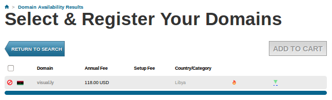

Web scraping with selenium for checking domain availability - 2017
Recently, I've been doing data visualization on the Web using D3.js. Inevitably, I ran into a site http://visual.ly/. Aside from its contents, I was kind of amazed by the domain name, especially, the top-level country domain name, ly. Indeed, the Lybian Registar official site listed that domain as one of the successful names among .ly.
So, I started to check other words that would fit my needs. No wonder. I realized that there are so many good domain names with ly since virtually any word can have 'ly' as its suffix.
However, as you probably guessed, checking the availability by manually takes a lot of efforts and it's a waste of time. So, I started using Selenium 2 for Web scraping though it's primary use is to testing web app.
Here are the steps of scraping:
- First, I chose one of the registar to test hundreds of domain names. In my case, it's 101domain.
- I built a text file with domain names, domain.txt.
AD = Andorra AE = United Arab Emirates AF = Afghanistan AG = Antigua and Barbuda ... LY = Libya ...
- Also, I need dictionary, words.txt which I got it from Linux system: /usr/share/dict/words.
- Then, I combine the words and domain names with two constraints:
- length(domain name) > 6
- After taking off the domain suffix, the remaining string should be a word itself.
- Then, I put the list of names into the search box one by one using Selenium python binding API.
- After hitting the Return key (this is also done automatically by Selenium), we get a new page showing availability of the domain we put. Selenium checks whether there is a certain string that can tell yes or no.

- The result will be written both on the console (I used the sublime). Test run output:
['austere.ly', 'visual.ly', 'autonomous.ly', 'avaricious.ly'] Trying austere.ly ... austere.ly : True Trying visual.ly ... visual.ly : False Trying autonomous.ly ... autonomous.ly : False Trying avaricious.ly ... avaricious.ly : True
and a file. Only, available names will be written into the file. - Regarding the display: we can make the browser visible or invisible(faster) during the scraping.
- In the code samples listed in later sections, only the domain "ly" is used.
- It usually takes time for rendering a page. So, before we check the availability page (2nd page), the code needs time. I opted to check if specific strings are there in the page rather than using time.sleep(). But for the first page where Selenium puts in the input, I used time.sleep().
- I'm using Firefox, but there are other choices (WebDriver API):
webdriver.Firefox webdriver.FirefoxProfile webdriver.Chrome webdriver.ChromeOptions webdriver.Ie webdriver.Opera webdriver.PhantomJS webdriver.Remote webdriver.DesiredCapabilities webdriver.ActionChains webdriver.TouchActions webdriver.Proxy
Install information for python: https://pypi.python.org/pypi/selenium.
$ sudo pip install -U selenium
To make the browser invisible, we need to install following backend:
$ sudo apt-get install xvfb xserver-xephyr $ sudo pip install pyvirtualdisplay
from selenium import webdriver
from selenium.webdriver.common.keys import Keys
import time
import random
def ready(browser, d):
""" 1. check availability with specific strings
2. while is needed for the page randering time
3. returns 'page_source' and 'availability'
"""
page_source = (browser.page_source).encode('utf-8')
yes = "class=\"available selected\""
no = "class=\"not_available\""
check1 = yes in page_source
check2 = no in page_source
while(check1 == False and check2 == False):
time.sleep(1)
"""Looping until the result page should have a string either for check1 or for check2"""
page_source = (browser.page_source).encode('utf-8')
check1 = yes in page_source
check2 = no in page_source
print "%s yes: check1 = %s no: check2 = %s" %(d, check1, check2)
availability = True if check1 else False
return page_source, availability
def domain_names():
# Finding a combination of words and domain name (.ly, .us, etc).
LENGTH = 20
d_list = []
with open('domain.txt', 'r') as df:
for d in df:
d_list.append((d[0:2]).lower())
d_exclude_list = []
# selective domain name only
d_list = ['ly']
wf = open('words.txt', 'r')
w_list = wf.read().split()
wf.close()
domain_out = []
with open('domain_out.txt', 'w') as outf:
for d in d_list:
if d not in d_exclude_list:
#print '------- ', d, ' ------\n'
#outf.write('------- ' + d + ' ------\n')
for w in w_list:
if w[-2:] == d and len(w) >= 6 and len(w) <= LENGTH:
w_short = w[:-2]
# select words that are the dictionary words without suffix
# (ok) visually = visual (dic_word) + ly
# (not ok) unanimous = unanimo (not a dic_word) + us
if w_short in w_list:
d_str = w[:-2]+'.'+ d
#print d_str
outf.write(d_str + '\n')
domain_out.append(d_str)
#print "----------------------"
#print len(domain_out)
#print domain_out
return domain_out
if __name__ == '__main__':
domain = domain_names()
# testing
# domain = ['austere.ly', 'visual.ly', 'autonomous.ly', 'avaricious.ly']
print domain
available_domain = []
browser = webdriver.Firefox()
for d in domain:
print "Trying %s, browser.get()" %(d)
browser.get('http://www.101domain.com/')
time.sleep(random.randint(1,5))
elem = None
while(not elem):
time.sleep(1)
try:
elem = browser.find_element_by_name('root') # Find the search box
except:
print "No such element : root"
elem.send_keys(d + Keys.RETURN)
page_source, available = ready(browser, d)
if available:
available_domain.append(d)
print "%s : %s" %(d, available)
browser.close()
with open('available_domain.txt', 'w') as f:
for d in available_domain:
f.write(d+'\n')
Almost identical to the code 1 except we're using pyvirtualdisplay and minor changes accordingly.
from selenium import webdriver
from selenium.webdriver.common.keys import Keys
from pyvirtualdisplay import Display
import time
import random
def ready(browser, d):
""" 1. check availability with specific strings
2. while is needed for the page randering time
3. returns 'page_source' and 'availability'
"""
page_source = (browser.page_source).encode('utf-8')
yes = "class=\"available selected\""
no = "class=\"not_available\""
check1 = yes in page_source
check2 = no in page_source
while(check1 == False and check2 == False):
time.sleep(1)
"""Looping until the result page should have a string either for check1 or for check2"""
page_source = (browser.page_source).encode('utf-8')
check1 = yes in page_source
check2 = no in page_source
print "%s yes: check1 = %s no: check2 = %s" %(d, check1, check2)
availability = True if check1 else False
return page_source, availability
def domain_names():
# Finding a combination of words and domain name (.ly, .us, etc).
LENGTH = 20
d_list = []
with open('domain.txt', 'r') as df:
for d in df:
d_list.append((d[0:2]).lower())
d_exclude_list = []
# selective domain name only
d_list = ['ly']
wf = open('words.txt', 'r')
w_list = wf.read().split()
wf.close()
domain_out = []
with open('domain_out.txt', 'w') as outf:
for d in d_list:
if d not in d_exclude_list:
#print '------- ', d, ' ------\n'
#outf.write('------- ' + d + ' ------\n')
for w in w_list:
if w[-2:] == d and len(w) >= 6 and len(w) <= LENGTH:
w_short = w[:-2]
# select words that are the dictionary words without suffix
# (ok) visually = visual (dic_word) + ly
# (not ok) unanimous = unanimo (not a dic_word) + us
if w_short in w_list:
d_str = w[:-2]+'.'+ d
#print d_str
outf.write(d_str + '\n')
domain_out.append(d_str)
#print "----------------------"
#print len(domain_out)
#print domain_out
return domain_out
if __name__ == '__main__':
domain = domain_names()
# testing
# domain = ['austere.ly', 'visual.ly', 'autonomous.ly', 'avaricious.ly']
print domain
available_domain = []
display = Display(visible=0, size=(1024, 768))
display.start()
browser = webdriver.Firefox()
for d in domain:
print "Trying %s, browser.get()" %(d)
browser.get('http://www.101domain.com/')
time.sleep(random.randint(1,5))
elem = None
while(not elem):
time.sleep(1)
try:
elem = browser.find_element_by_name('root') # Find the search box
except:
print "No such element : root"
elem.send_keys(d + Keys.RETURN)
page_source, available = ready(browser, d)
if available:
available_domain.append(d)
print "%s : %s" %(d, available)
browser.close()
with open('available_domain.txt', 'w') as f:
for d in available_domain:
f.write(d+'\n')
For more information about the Selenium for Python, please check:
The selenium.webdriver module provides all the WebDriver implementations. Currently supported WebDriver implementations are Firefox, Chrome, Ie and Remote. The Keys class provide keys in the keyboard like RETURN, F1, ALT etc.
from selenium import webdriver from selenium.webdriver.common.keys import Keys
The instance of Firefox WebDriver is created:
driver = webdriver.Firefox()
Here are the APIs used in the code:
-
driver.get(url): Loads a web page in the current browser session.
This method will navigate to a page given by the URL. WebDriver will wait until the page has fully loaded (that is, the "onload" event has fired) before returning control to your test or script. It's worth noting that if our page uses a lot of AJAX on load then WebDriver may not know when it has completely loaded. -
elem = driver.find_elements_by_name(name): Finds elements by name.
WebDriver offers a number of ways to find elements using one of the find_element_by_* methods. For example, the input text element can be located by its name attribute using find_element_by_name() method. Use this when we know name attribute of an element. With this strategy, the first element with the name attribute value matching the location will be returned. If no element has a matching name attribute, a NoSuchElementException will be raised. - elem.send_keys("root") / elem.send_keys(Keys.RETURN): Sending keys, this is similar to entering keys using your keyboard. Special keys can be send using Keys class imported from selenium.webdriver.common.keys After submission of the page, you should get the result if there is any.
- driver.page_source: Gets the source of the current page.
- driver.close(): The browser window is closed. We can also call quit() method instead of close(). The quit() will exit entire browser where as close() will close one tab, but if it just one tab, by default most browser will exit entirely.
Here is the file written as output for the top-level country domain, ly as of Aug 2014:
available_domain.txt.
Python tutorial
Python Home
Introduction
Running Python Programs (os, sys, import)
Modules and IDLE (Import, Reload, exec)
Object Types - Numbers, Strings, and None
Strings - Escape Sequence, Raw String, and Slicing
Strings - Methods
Formatting Strings - expressions and method calls
Files and os.path
Traversing directories recursively
Subprocess Module
Regular Expressions with Python
Object Types - Lists
Object Types - Dictionaries and Tuples
Functions def, *args, **kargs
Functions lambda
Built-in Functions
map, filter, and reduce
Decorators
List Comprehension
Sets (union/intersection) and itertools - Jaccard coefficient and shingling to check plagiarism
Hashing (Hash tables and hashlib)
Dictionary Comprehension with zip
The yield keyword
Generator Functions and Expressions
generator.send() method
Iterators
Classes and Instances (__init__, __call__, etc.)
if__name__ == '__main__'
argparse
Exceptions
@static method vs class method
Private attributes and private methods
bits, bytes, bitstring, and constBitStream
json.dump(s) and json.load(s)
Python Object Serialization - pickle and json
Python Object Serialization - yaml and json
Priority queue and heap queue data structure
Graph data structure
Dijkstra's shortest path algorithm
Prim's spanning tree algorithm
Closure
Functional programming in Python
Remote running a local file using ssh
SQLite 3 - A. Connecting to DB, create/drop table, and insert data into a table
SQLite 3 - B. Selecting, updating and deleting data
MongoDB with PyMongo I - Installing MongoDB ...
Python HTTP Web Services - urllib, httplib2
Web scraping with Selenium for checking domain availability
REST API : Http Requests for Humans with Flask
Blog app with Tornado
Multithreading ...
Python Network Programming I - Basic Server / Client : A Basics
Python Network Programming I - Basic Server / Client : B File Transfer
Python Network Programming II - Chat Server / Client
Python Network Programming III - Echo Server using socketserver network framework
Python Network Programming IV - Asynchronous Request Handling : ThreadingMixIn and ForkingMixIn
Python Interview Questions I
Python Interview Questions II
Python Interview Questions III
Python Interview Questions IV
Python Interview Questions V
Image processing with Python image library Pillow
Python and C++ with SIP
PyDev with Eclipse
Matplotlib
Redis with Python
NumPy array basics A
NumPy Matrix and Linear Algebra
Pandas with NumPy and Matplotlib
Celluar Automata
Batch gradient descent algorithm
Longest Common Substring Algorithm
Python Unit Test - TDD using unittest.TestCase class
Simple tool - Google page ranking by keywords
Google App Hello World
Google App webapp2 and WSGI
Uploading Google App Hello World
Python 2 vs Python 3
virtualenv and virtualenvwrapper
Uploading a big file to AWS S3 using boto module
Scheduled stopping and starting an AWS instance
Cloudera CDH5 - Scheduled stopping and starting services
Removing Cloud Files - Rackspace API with curl and subprocess
Checking if a process is running/hanging and stop/run a scheduled task on Windows
Apache Spark 1.3 with PySpark (Spark Python API) Shell
Apache Spark 1.2 Streaming
bottle 0.12.7 - Fast and simple WSGI-micro framework for small web-applications ...
Flask app with Apache WSGI on Ubuntu14/CentOS7 ...
Fabric - streamlining the use of SSH for application deployment
Ansible Quick Preview - Setting up web servers with Nginx, configure enviroments, and deploy an App
Neural Networks with backpropagation for XOR using one hidden layer
NLP - NLTK (Natural Language Toolkit) ...
RabbitMQ(Message broker server) and Celery(Task queue) ...
OpenCV3 and Matplotlib ...
Simple tool - Concatenating slides using FFmpeg ...
iPython - Signal Processing with NumPy
iPython and Jupyter - Install Jupyter, iPython Notebook, drawing with Matplotlib, and publishing it to Github
iPython and Jupyter Notebook with Embedded D3.js
Downloading YouTube videos using youtube-dl embedded with Python
Machine Learning : scikit-learn ...
Django 1.6/1.8 Web Framework ...
Ph.D. / Golden Gate Ave, San Francisco / Seoul National Univ / Carnegie Mellon / UC Berkeley / DevOps / Deep Learning / Visualization